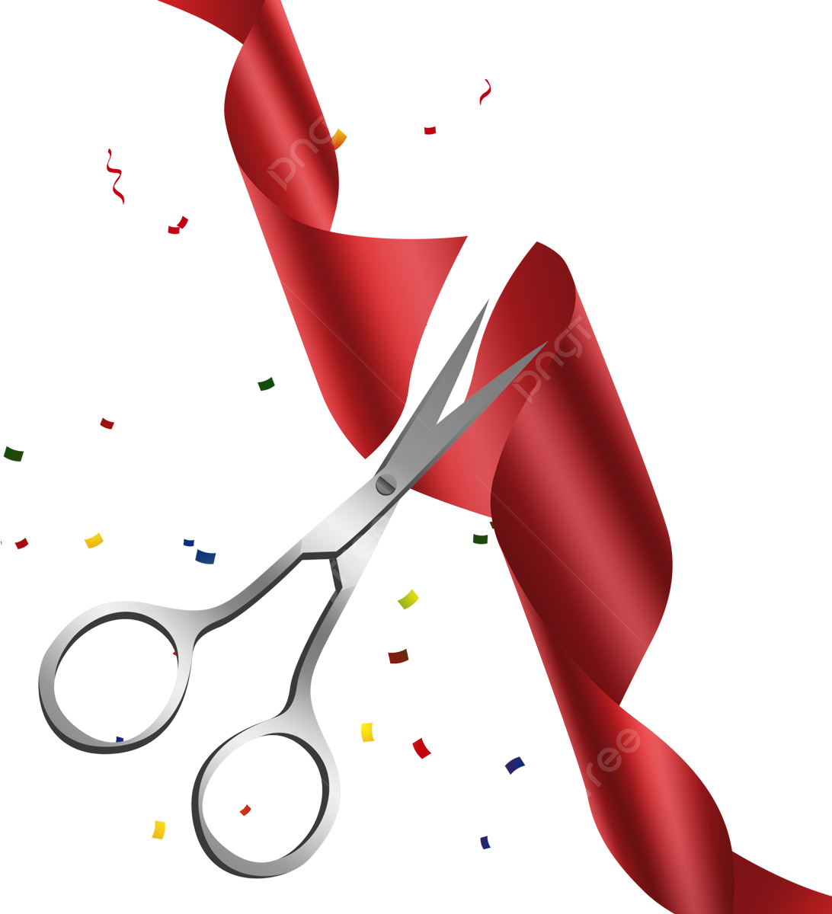
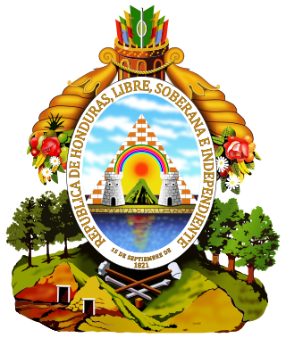
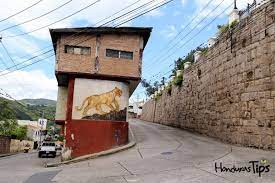
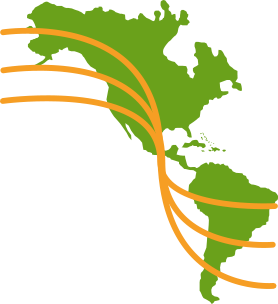
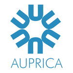

La historia de la Universidad José Cecilio del Valle (UJCV) se remonta al año de 1976, cuando la Asociación Hondureña para el Fomento de la Educación Superior (AHFES), en cumplimiento de sus objetivos y conforme a lo acordado en Acta número 1 del 10 de abril de ese año, se comprometió a establecer un nuevo centro de estudios superiores, una universidad privada con sede en Tegucigalpa. El 9 de julio de 1977 las autoridades de la UNAH responden afirmativamente a la solicitud presentada para fundar la UJCV, de conformidad con el Artículo Constitucional 157. El 20 de julio de 1977 el Consejo de Ministros coincide con el criterio de la UNAH. Y es así que el 1 de diciembre la Universidad José Cecilio del Valle inicia sus operaciones. La nueva universidad ofrece a la juventud hondureña una oferta educativa de tres carreras: Arquitectura, Agronomía y Administración de Empresas Agrícolas. Así nace el estudio de la arquitectura en Honduras. El 8 de mayo de 1978, se da la autorización para el establecimiento de la Universidad José Cecilio del Valle, concedida por el Gobierno de Honduras por Decreto 1605-EP del Ministerio de Educación Pública, publicado en el diario oficial La Gaceta 2250 de fecha 19 de mayo, en el cual se aprueba como fecha de iniciación de sus labores académicas, el 1 de febrero de 1978.
- 1976
- 1977
- 1978
- 1981
- 1981
- 1982
- 1986
- 1988
- 1990
- 1997
- 1998
- 1998
- 2008
- 2011
- 2012
- 2012
- 2013
- 2013
- 2014
- 2014
- 2016
- 2017
- 2019
- 2019
- 2019
- 2019
-

1976
La Asociación Hondureña para el Fomento de la Educación Superior (AHFES) crea la UJCV.
-

1982
El gobierno de Honduras aprueba la creación y funcionamiento de la UJCV
-

1978
La UJCV inicia operaciones en su Campus en el Barrio La Leona, en Tegucigalpa, con 3 carreras: Arquitectura, Agronomía y Administración de Empresas. Aquí nace la carrera de Arquitectura en Honduras.
-
1981
Se firma el primer convenio internacional, en este caso, con el Tec de Monterrey.
-

1981
Se realiza la primera graduación. Aparecen los primeros graduados en Honduras de la carrera de Arquitectura.
-

1982
Nace en Honduras la carrera de Ingeniería en Sistemas de Computación, por supuesto, en la UJCV.
-
1986
Se gradúan en Honduras los primeros ingenieros en computación del país.
-

1988
La UJCV se afilió a la Organización Universitaria Interamericana (OUI).
-

1990
Se crea la Asociación de Universidades Privadas de Centroamérica y Panamá (AUPRICA), liderada por la UJCV.
-

1997
La UJCV es acreditada por AUPRICA.
-
1998
La UJCV se traslada a sus propias instalaciones en su Campus de Tegucigalpa en la Col. Humuya.
-
1998
La UJCV abre operaciones en la ciudad de Comayagua bajo un convenio con el Ministerio de Agricultura y Ganadería.
-
2008
Se instala la primera plataforma virtual de aprendizaje en Centroamérica en la UJCV.
-
2011
Se inaugura su nuevo y moderno edificio académico en su campus de Tegucigalpa.
-
2012
Se crea la Vicerrectoría de Innovación y Desarrollo y la UJCV se convierte en la primera Universidad 2.0 de Centroamérica.
-
2012
La UJCV se traslada a sus propias instalaciones en su Campus de Comayagua.
-
2013
Se firma convenio con el Project Management Institute (PMI) y con la Academia Nacional de Ciencias de Honduras.
-
2013
Se aprueba el Sistema de Estudios de Posgrado y abre la primera maestría en Alta Gerencia de Proyectos.
-
2014
Se crean las primeras 5 asignaturas totalmente virtuales para las clases generales.
-
2014
Se abre la segunda maestría en Diseño y Planificación Urbana.
-
2016
Se abre la tercera maestría en Derecho del Trabajo y Protección Social.
-
2017
Se crea el Sistema de Educación a Distancia.
-
2019
Se abren las primeras 2 carreras virtuales: Administración de Empresas y Auditoría y Finanzas.
-
2019
Se culmina la segunda fase del edificio académico en el Campus de Tegucigalpa.
-
2019
Se aprueban 4 programas de maestría en Alta Gerencia: Negocios, Mercadotecnia, Finanzas y Talento Humano.
-
2019
Se aprueba la Maestría en Gestión del Desarrollo con enfoque Psicosocial.